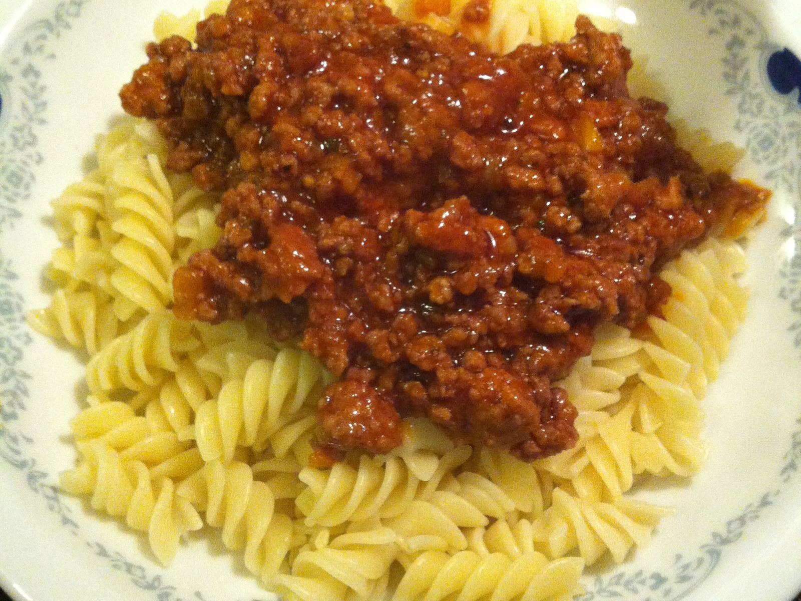

Bolognese

Description
Bolognese sauce originates from italian city Bologna and is one of the most popular sauces in the world
Main components of the sauce are ground meat and pasteurised tomato
Ingridients
- 500g ground beef
- 500ml pasteurized tomato
- 100g onions
- 2-3 garlics
- 1 carrot
- Laurus
- Salt
- Pepper
- Sweet paprika
- Olive oil
Steps
- Season the meat with salt and pepper and leave it in the fridge for about an hour
- Put a pan on fire and heat it up
- Put oil in a pan and wait for the right temperature
- When oil is hot enough but not too hot, put onions, carrot and garlic previously cut to small pieces in the pan
- When onion turns golden brown put the meat inside
- Meat will start changing color and letting the water outside
- When water evaporites add some more water and laurus
- Let it cook for about an hour
- After an hour or so add pasteurized tomato and sweet paprika
- Cook for 30 more minutes
- Finished! Add salt and pepper if needed. Bon Appetit.